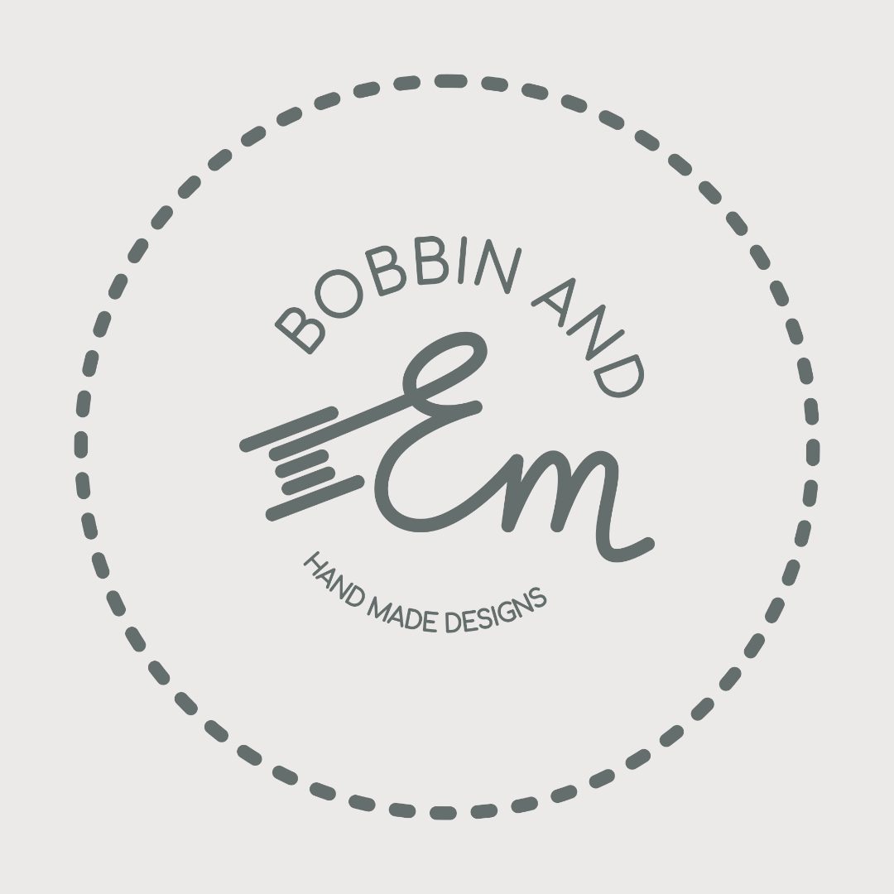
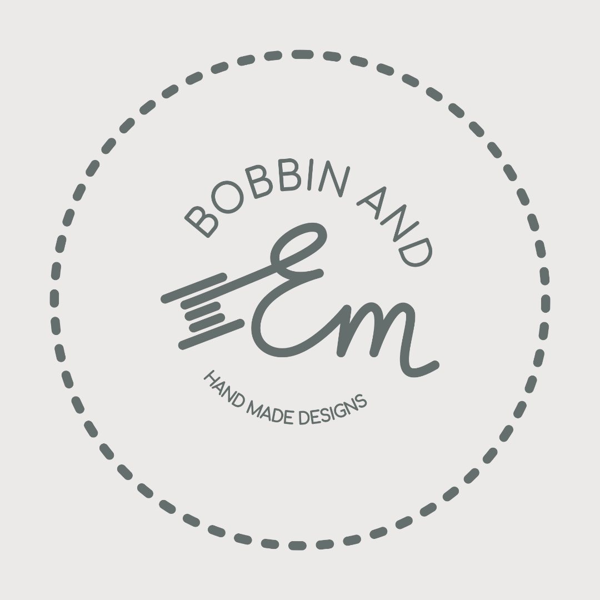
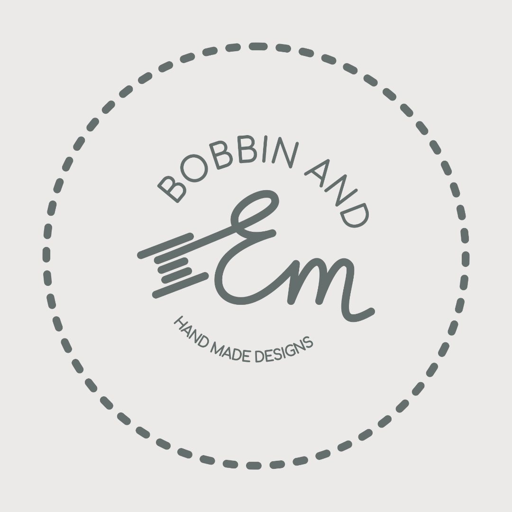

Emily, of Bobbin & Em, started a business selling handmade facemasks during the pandemic. To improve brand recognition in the community, I designed a clear and distinctive word-mark and thank you note to be included in each facemask package. The flowing letters draw inspiration from the thred from a bobbin, and the circle of text is reminiscent of small craft goods companies. The pale greys with blue hints bring a professional finish, completing the brand. The product price point and sale locations make this brand ideal for targeting the hand-crafted luxury market.
